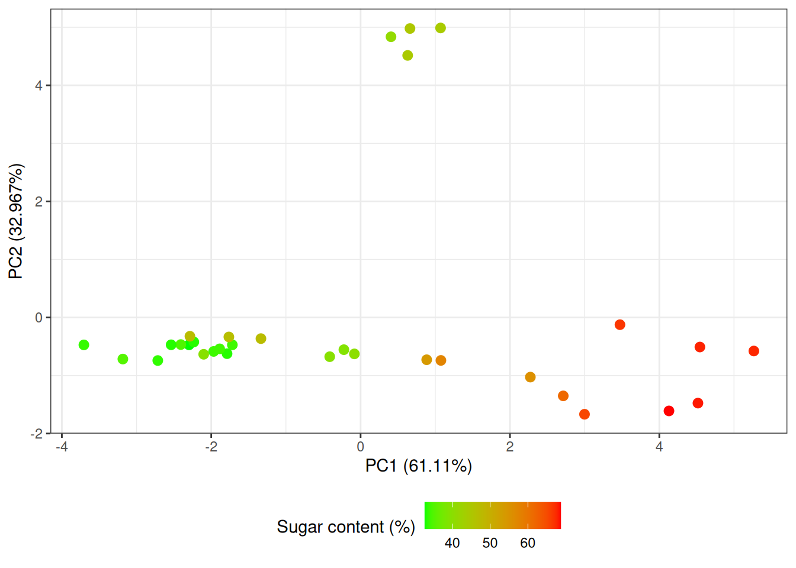

Code
pca <- prcomp(t(X[, -1]), center = T, scale = F)
var_exp <- summary(pca)$importance[2, ] * 100
df <- data.frame(
pca$x,
sugar = Y$sugar
)
ggplot(df, aes(PC1, PC2)) +
geom_point(size = 2.5, aes(color = sugar)) +
scale_color_gradient(low = "green", high = "red") +
labs(
y = paste("PC2 (", var_exp[2], "%)", sep = ""),
x = paste("PC1 (", var_exp[1], "%)", sep = ""),
color = "Sugar content (%)"
) +
theme_bw() +
theme(legend.position = "bottom")
